[78]:
%load_ext autoreload
%autoreload 2
import sys
sys.path.append('/Users/michaelkatz/Research/Eryn/')
from eryn.ensemble import EnsembleSampler
from eryn.state import State
from eryn.prior import PriorContainer, uniform_dist
from eryn.utils import TransformContainer
import matplotlib.pyplot as plt
import numpy as np
# set random seed
np.random.seed(42)
import corner
The autoreload extension is already loaded. To reload it, use:
%reload_ext autoreload
Getting Started with Eryn¶
n-dimensional Gaussian¶
Let’s start by running on a simple Gaussian likelihood. We will then build up to the full capabilities of the Eryn sampler.
[2]:
# Gaussian likelihood
def log_prob_fn(x, mu, invcov):
diff = x - mu
return -0.5 * (diff * np.dot(invcov, diff.T).T).sum(axis=1)
# wrapping
def log_prob_fn_wrap(x, *args):
shape = x.shape[:-1]
ndim = x.shape[-1]
x_temp = x.reshape(-1, ndim).copy()
temp = log_prob_fn(x_temp, *args)
out = temp.reshape(shape)
blobs = np.random.randn(*(out.shape[:2] + (3,)))
return np.concatenate([np.expand_dims(out, axis=-1), blobs], axis=-1)
ndim = 5
nwalkers = 100
# mean
means = np.zeros(ndim) # np.random.rand(ndim)
# define covariance matrix
cov = np.diag(np.ones(ndim))
invcov = np.linalg.inv(cov)
# set prior limits
lims = 5.0
priors_in = {i: uniform_dist(-lims, lims) for i in range(ndim)}
priors = PriorContainer(priors_in)
# starting positions
# randomize throughout prior
coords = priors.rvs(size=(nwalkers,))
# check log_prob
log_prob = log_prob_fn(coords, means, cov)
print(log_prob)
ensemble = EnsembleSampler(
nwalkers,
ndim,
log_prob_fn,
priors,
args=[means, cov],
)
nsteps = 5000
# burn for 1000 steps
burn = 1000
# thin by 5
thin_by = 5
ensemble.run_mcmc(coords, nsteps, burn=burn, progress=True, thin_by=thin_by)
samples = ensemble.get_chain()['model_0'].reshape(-1, ndim)
corner.corner(samples, truths=np.full(ndim, 0.0))
3%|▎ | 34/1000 [00:00<00:02, 339.07it/s]
[-30.69858605 -27.88613553 -10.22294092 -14.70569247 -18.96300942
-40.24777582 -18.73441074 -24.83741982 -29.01040764 -27.8427905
-15.6395355 -37.63324244 -37.32945619 -23.65755241 -14.71578138
-17.41587351 -10.60372232 -14.78508305 -16.44610878 -14.65807937
-10.96569731 -21.07245692 -21.71012131 -11.7938995 -26.68678623
-10.56139796 -21.07206293 -15.22766639 -21.70138195 -21.66486977
-12.67496753 -16.03289018 -29.46929288 -26.72131899 -44.24698912
-21.3584848 -19.77366496 -28.72150734 -5.84518648 -33.37118884
-36.15731891 -25.26041351 -25.57594664 -12.25802303 -22.37039294
-31.88982593 -15.35309536 -24.45627855 -22.46651653 -23.11210745
-25.31311317 -14.36123373 -23.67409531 -23.41272599 -34.51272062
-13.40386882 -42.6083427 -10.3819265 -33.56151466 -19.79275524
-10.09464227 -17.63670509 -15.88594767 -1.5583328 -38.33786195
-10.04251137 -22.92432228 -26.5383962 -29.02898281 -34.39747766
-29.93610511 -43.67631032 -37.6288042 -26.57863213 -12.43201382
-21.71339587 -24.98065915 -22.34629761 -28.53454745 -20.72808992
-23.58751379 -13.39368888 -12.15662608 -32.82365756 -8.14075088
-26.22668818 -20.43301692 -8.79050623 -23.10278803 -16.10581548
-38.66327643 -21.96839538 -19.91765459 -10.73450427 -13.25399003
-11.51642261 -12.99636574 -21.3527218 -33.90758502 -35.26045709]
100%|██████████| 1000/1000 [00:02<00:00, 448.56it/s]
100%|██████████| 25000/25000 [00:52<00:00, 473.94it/s]
[2]:
<eryn.state.State at 0x10cd74720>
[4]:
[4]:


[17]:
#### Chains
fig, ax = plt.subplots(ndim, 1)
fig.set_size_inches(10, 8)
for i in range(ndim):
for walk in range(nwalkers):
ax[i].plot(ensemble.get_chain()['model_0'][:, 0, walk, :, i])
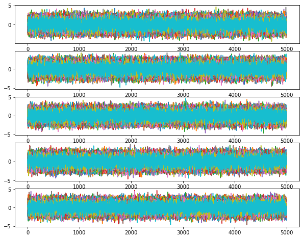
Add tempering¶
[6]:
ndim = 5
nwalkers = 100
ntemps = 10
tempering_kwargs=dict(ntemps=ntemps)
# randomize throughout prior
coords = priors.rvs(size=(ntemps, nwalkers,))
ensemble_pt = EnsembleSampler(
nwalkers,
ndim,
log_prob_fn,
priors,
args=[means, cov],
tempering_kwargs=tempering_kwargs
)
nsteps = 5000
# burn for 1000 steps
burn = 1000
# thin by 5
thin_by = 5
ensemble_pt.run_mcmc(coords, nsteps, burn=burn, progress=True, thin_by=thin_by)
100%|██████████| 1000/1000 [00:05<00:00, 191.10it/s]
100%|██████████| 25000/25000 [02:07<00:00, 195.38it/s]
[6]:
<eryn.state.State at 0x111541400>
[9]:
for temp in range(ntemps):
print(temp + 1)
samples = ensemble.get_chain()['model_0'][:, temp].reshape(-1, ndim)
corner.corner(samples, truths=np.full(ndim, 0.0))
1
2
3
4
5
6
7
8
9
10

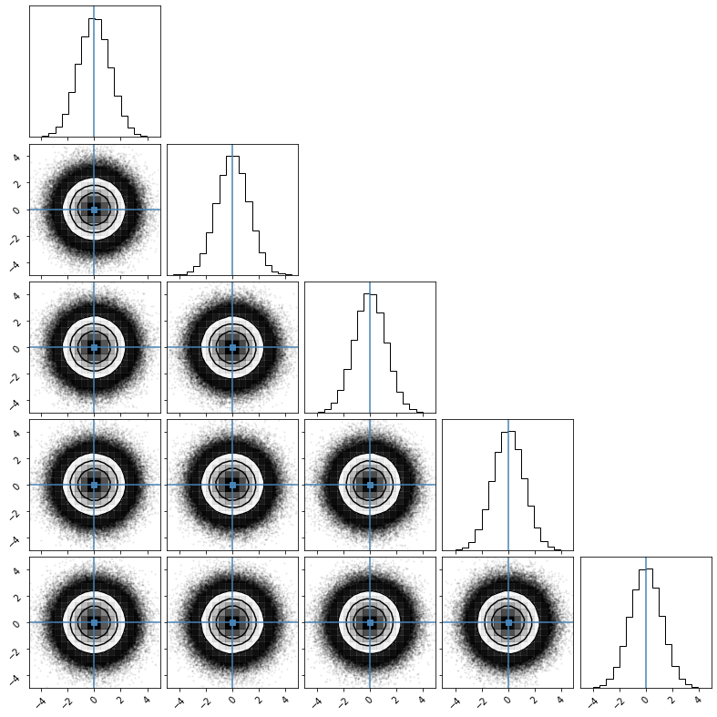
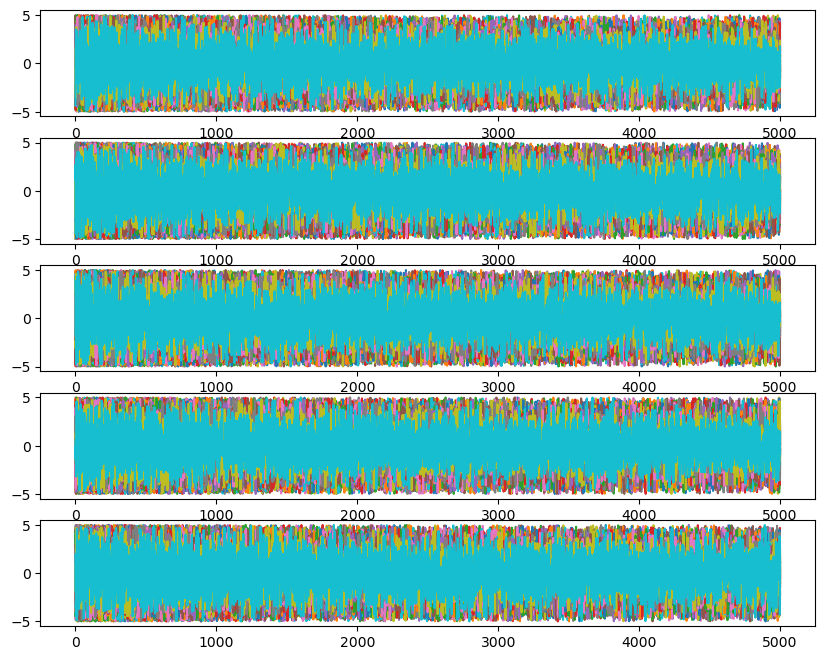
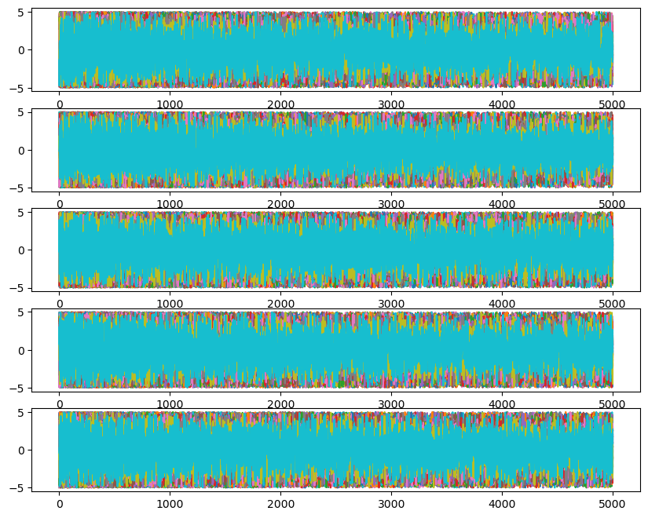

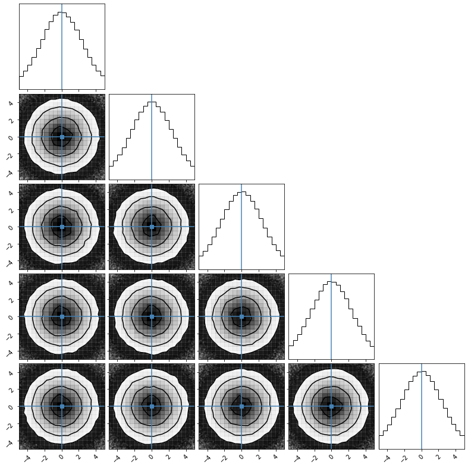
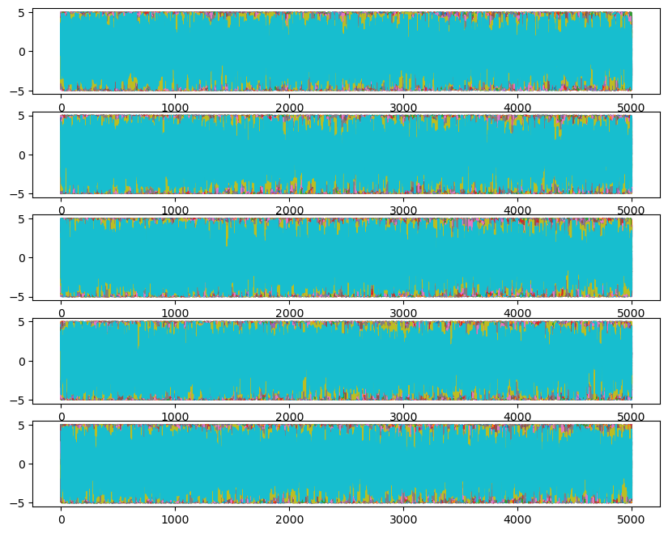
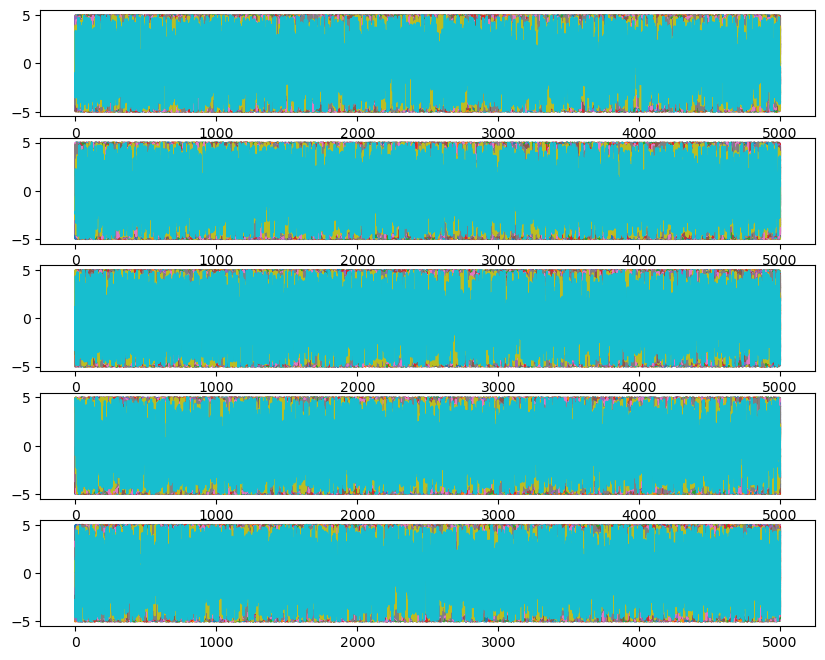
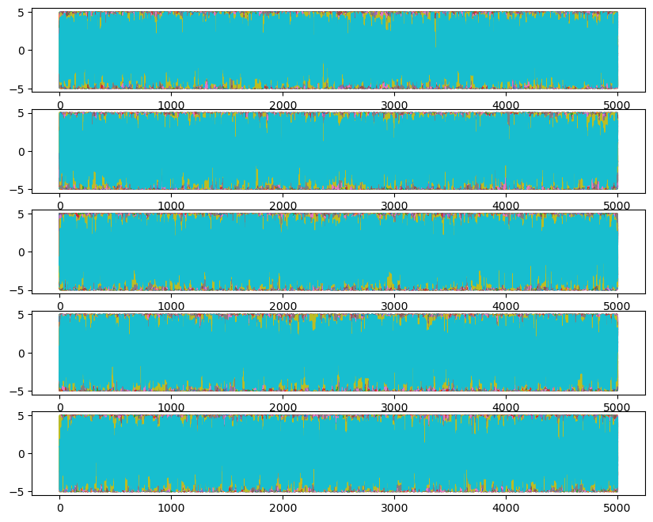
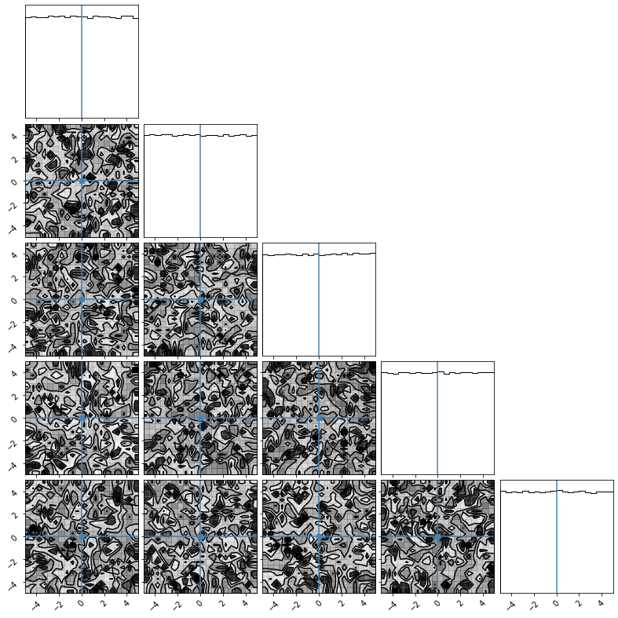
[19]:
#### Chains
for temp in range(ntemps):
fig, ax = plt.subplots(ndim, 1)
fig.set_size_inches(10, 8)
for i in range(ndim):
for walk in range(nwalkers):
ax[i].plot(ensemble.get_chain()['model_0'][:, temp, walk, :, i])


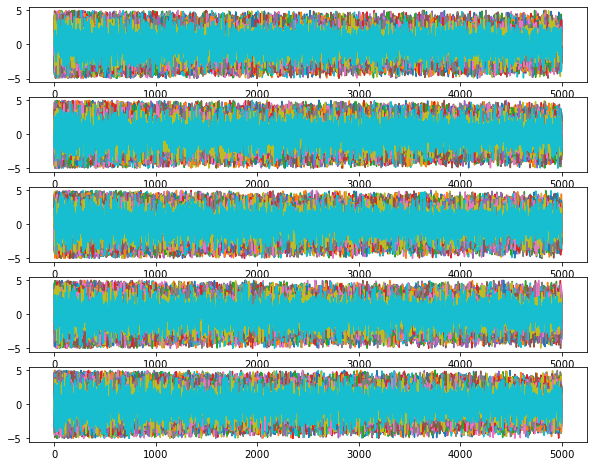


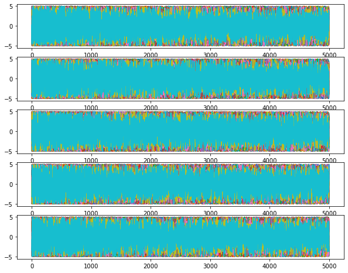


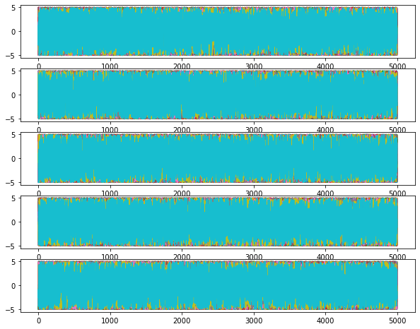

Add multiple leaf count uncertainty (i.e. reversible-jump MCMC))¶
[79]:
# need new likelihood
def gaussian(x, a, b, c):
f_x = a[:, None] * np.exp(-((x[None, :] - b[:, None]) ** 2) / (2 * c[:, None] ** 2))
return f_x
def gaussian_flat(x, a, b, c):
f_x = a * np.exp(-((x - b) ** 2) / (2 * c ** 2))
return f_x
def combine_gaussians(x1, group1, t, data, sigma):
a = x1[:, 0]
b = x1[:, 1]
c = x1[:, 2]
gauss_out = gaussian(t, a, b, c)
num_groups = group1.max() + 1
# add templates to the proper template based on group1
template = np.zeros((num_groups, len(t)))
for i in range(num_groups):
inds1 = np.where(group1 == i)
template[i] += gauss_out[inds1].sum(axis=0)
return template
def log_prob_fn(x1, group1, t, data, sigma):
# x1 is one leaf's parameters
# group1 is which tree this leaf belongs to
template = combine_gaussians(x1, group1, t, data, sigma)
ll = - 0.5 * np.sum(((template - data) / sigma) ** 2, axis=-1)
return ll
nwalkers = 20
ntemps = 4
ndims = [3]
nleaves_max = [8]
branch_names = ["gauss"]
# define time stream
num = 500
t = np.linspace(-1, 1, num)
gauss_inj_params = [
[3.3, -0.2, 0.1],
[2.6, -0.1, 0.1],
[3.4, 0.0, 0.1],
[2.9, 0.3, 0.1],
]
injection = np.zeros(num)
# combine gaussians
injection = combine_gaussians(np.asarray(gauss_inj_params), np.zeros(len(gauss_inj_params), dtype=int), t, y, sigma)[0]
# set noise level
sigma = 0.25
y = injection + sigma * np.random.randn(len(injection))
import matplotlib.pyplot as plt
plt.plot(t, y, label="data", color="lightskyblue")
plt.plot(t, injection, label="injection", color="crimson")
plt.legend()
[79]:
<matplotlib.legend.Legend at 0x15c792ee0>
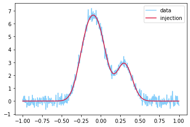
[80]:
# describes priors for all leaves independently
priors = {
"gauss": {
0: uniform_dist(2.5, 3.5), # amplitude
1: uniform_dist(t.min(), t.max()), # mean
2: uniform_dist(0.01, 0.21), # sigma
},
}
coords = {
name: np.zeros((ntemps, nwalkers, nleaf, ndim))
for nleaf, ndim, name in zip(nleaves_max, ndims, branch_names)
}
# this is the sigma for the multivariate Gaussian that sets starting points
# We need it to be very small to assume we are passed the search phase
# we will verify this is with likelihood calculations
sig1 = 0.00000001
for nleaf, ndim, name in zip(nleaves_max, ndims, branch_names):
for nn in range(nleaf):
if nn >= len(gauss_inj_params):
# fill a non-used starting leaf with reasonable parameters
nn = np.random.randint(low=0, high=3)
coords[name][:, :, nn] = np.random.multivariate_normal(gauss_inj_params[nn], np.diag(np.ones(3) * sig1), size=(ntemps, nwalkers)) # dist.rvs(size=(ntemps, nwalkers, nleaf))
# make sure to start near the proper setup
inds = {
name: np.zeros((ntemps, nwalkers, nleaf), dtype=bool)
for nleaf, name in zip(nleaves_max, branch_names)
}
inds['gauss'][:, :, :len(gauss_inj_params)] = True
# setup groups just to compute likelihood
groups = {
name: np.arange(coords[name].shape[0] * coords[name].shape[1]).reshape(
coords[name].shape[:2]
)[:, :, None]
for name in coords
}
groups = {
name: np.repeat(groups[name], coords[name].shape[2], axis=-1) for name in groups
}
coords_in = {name: coords[name][inds[name]] for name in coords}
groups_in = {name: groups[name][inds[name]] for name in groups}
log_prob = log_prob_fn(
coords_in["gauss"],
groups_in["gauss"],
t,
y,
sigma
)
# make sure it is reasonably small
# will not be zero due to noise
log_prob = log_prob.reshape(ntemps, nwalkers)
print(log_prob)
# setup starting state
log_prob = log_prob.reshape(ntemps, nwalkers)
blobs = None # np.random.randn(ntemps, nwalkers, 3)
state = State(coords, log_prob=log_prob, inds=inds)
[[-240.18791329 -240.34854827 -240.36601662 -240.38774254 -240.45677155
-240.32180016 -240.38252592 -240.46182312 -240.09483499 -240.20280119
-240.54079238 -240.53599251 -240.48582986 -240.26035003 -240.17782736
-240.43964753 -240.28094621 -240.21442607 -240.32945851 -240.20817986]
[-240.24180987 -240.28184959 -240.34207866 -240.23243778 -240.28235961
-240.48581688 -240.13450893 -240.08082802 -240.11640099 -240.18165578
-240.27383069 -240.39261319 -240.21260148 -240.17549217 -240.14570604
-240.22673338 -240.57568622 -240.086541 -240.35601697 -240.12922591]
[-240.17255821 -240.4484594 -240.40777878 -240.08281649 -240.24932027
-240.0549914 -240.37771324 -240.37488778 -240.16040373 -240.20829846
-240.43244332 -240.29210751 -240.33117257 -240.27479091 -240.21411032
-240.10415578 -240.41950913 -240.33033012 -240.33306585 -240.31010685]
[-240.3380475 -240.15620733 -240.35612046 -240.32938538 -240.55067322
-240.08208768 -240.26982983 -240.12931061 -240.04433935 -240.19734074
-240.13785651 -240.32464081 -240.42523943 -240.41948135 -240.14067469
-240.100841 -240.26314194 -240.28423207 -240.0055032 -240.41084331]]
[81]:
# for the Gaussian Move, will be explained later
factor = 0.0001
cov = {"gauss": np.diag(np.ones(ndims[0])) * factor}
# backend.grow(100, blobs)
ensemble = EnsembleSampler(
nwalkers,
ndims, # assumes ndim_max
log_prob_fn,
priors,
args=[t, y, sigma],
tempering_kwargs=dict(ntemps=ntemps),
nbranches=len(branch_names),
branch_names=branch_names,
nleaves_max=nleaves_max,
provide_groups=True,
cov=cov,
rj_moves=True, # basic generation of new leaves from the prior
)
[85]:
nsteps = 10000
ensemble.run_mcmc(state, nsteps, burn=1000, progress=True, thin_by=1)
100%|██████████| 1000/1000 [00:10<00:00, 92.49it/s]
100%|██████████| 10000/10000 [01:45<00:00, 94.42it/s]
[85]:
<eryn.state.State at 0x11305e5e0>
[99]:
samples = ensemble.get_chain()['gauss'][:, temp].reshape(-1, ndim)
samples[~np.isnan(samples[:, 0])]
[99]:
array([[ 3.27653476, -0.19580649, 0.11017908],
[ 2.61609257, -0.10210084, 0.08425267],
[ 3.42586189, 0.01963378, 0.08657705],
...,
[ 3.07204554, -0.03255286, 0.13580535],
[ 3.01244011, 0.29030763, 0.0829935 ],
[ 2.73236945, -0.19496055, 0.06811822]])
[100]:
for temp in range(ntemps):
print(temp + 1)
samples = ensemble.get_chain()['gauss'][:, temp].reshape(-1, ndim)
# need to remove NaNs
samples = samples[~np.isnan(samples[:, 0])]
corner.corner(samples)
1
WARNING:root:Too few points to create valid contours
WARNING:root:Too few points to create valid contours
2
3
4

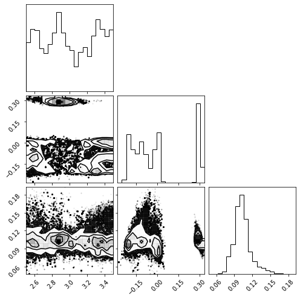


[112]:
print(f'max ll: {ensemble.get_log_prob().max()}')
bns = (
np.arange(1, nleaves_max[0] + 2) - 0.5
) # Just to make it pretty and center the bins
fig, ax = plt.subplots(ntemps, 1, sharex=True)
fig.set_size_inches(10, 8)
for temp, ax_t in enumerate(ax):
ax_t.hist(ensemble.get_nleaves()['gauss'][:, temp].flatten(), bins=bns)
max ll: -240.00550320262988

Utilities¶
Transform Container¶
Transform containers are primary used in likelihood functions to transform the arrays incoming from the sampler to the proper setup for likelihood computation. It can transform parameters based on transform functions and fill values into a final array for any value that is fixed during sampling.
It can be passed to the likeihood function as an arg or kwarg.
[3]:
# can be done with lambda or regular function
# must have same number of inputs and outputs at same index in outer arrays
def transform1(x, y):
return x * y, y / x
# this will do transform lambda x, y: (x**2, y**2) before transform1
parameter_transforms = {0: lambda x: np.log(x), (1, 2): lambda x, y: (x**2, y**2), (0, 2): transform1}
fill_dict = {
"ndim_full": 6, # full dimensionality after values are added
"fill_inds": np.array([2, 3, 5]), # indexes for fill values in final array
"fill_values": np.array([0.0, 1.0, -1.0]), # associated values for filling
}
tc = TransformContainer(parameter_transforms=parameter_transforms, fill_dict=fill_dict)
x = np.random.uniform(0.1, 4.0, size=(40, 3))
# can copy and transpose values if needed
out = tc.transform_base_parameters(x, copy=True, return_transpose=False)
print(out)
[[ 8.23896550e-01 1.07406126e+00 4.38085755e-01]
[ 1.88910815e+01 6.21394153e+00 1.11330310e+01]
[ 1.68545116e-01 1.19516724e+01 1.05605409e-01]
[-1.38625268e+00 1.47993046e+01 -1.30153307e+00]
[ 4.09574956e+00 5.40181187e+00 4.49705548e+00]
[ 2.74061153e-01 1.23299916e+00 6.09794139e+00]
[ 3.36793352e+00 4.14904988e-01 1.10161824e+01]
[ 7.49950383e-02 4.83661108e+00 1.60060923e+00]
[-8.67677302e+00 6.82335367e+00 -4.83244068e+00]
[ 6.40478571e+00 8.27473056e-01 1.31848978e+01]
[ 9.02835574e+00 6.98270093e-01 8.40439166e+00]
[ 9.47898383e-01 3.21239471e+00 4.19011108e+00]
[ 1.18616566e+01 9.87248728e+00 7.28232951e+00]
[ 3.01161035e-02 8.61051635e+00 3.92073718e-02]
[ 4.19967042e-01 2.24607203e+00 4.14233791e-01]
[ 1.11322265e+00 4.93245248e+00 1.37645645e+00]
[-1.70240754e+00 1.54480686e+01 -9.90659158e+00]
[ 1.15058852e+00 1.67781485e+00 1.06508704e+00]
[ 3.72467526e+00 1.14261654e+00 2.48141363e+00]
[ 2.22029447e+00 1.11620021e+00 1.68504753e+00]
[-7.54448959e-02 1.00202832e-02 -1.78910992e-01]
[-2.90333068e-01 9.18407112e+00 -4.92381625e-01]
[ 9.29757189e-01 2.81130629e+00 1.16244440e+01]
[-1.16955779e+00 1.18564260e+01 -9.36603242e+00]
[ 1.55583035e+01 1.33248048e+01 8.88693266e+00]
[ 6.33726098e+00 8.92321449e+00 6.51520299e+00]
[ 2.63517666e+00 1.52795391e+00 1.43951313e+00]
[ 3.45263616e-02 7.95471161e+00 9.77566135e-02]
[ 7.76057284e+00 2.26298869e+00 1.46534998e+01]
[ 3.79675345e+00 9.43864296e-01 4.36915690e+00]
[ 4.52488435e-01 1.35923953e+01 6.55280885e-01]
[-2.17927141e+00 4.90436329e+00 -5.57794729e+00]
[ 6.33237537e-01 1.32154480e+01 9.41423532e-01]
[ 9.35739117e+00 1.21859025e+01 2.04989424e+01]
[ 8.28806748e-02 1.47648343e-01 9.96250807e-02]
[ 1.61365021e+00 3.96748798e+00 1.41692434e+00]
[ 1.56482131e+00 1.07937158e+00 1.13979333e+00]
[-6.49812042e+00 3.86628838e+00 -4.48180501e+00]
[ 1.56368242e+01 1.51454335e+01 8.24078131e+00]
[ 1.66819490e-01 7.65616666e+00 2.40488327e-01]]
If you have mutliple branches in your sampler, you can add more than one Transform Container.
[7]:
def lnprob(x1, group1, x2, group2, transform_containers):
x = [x1, x2]
for i, (x_i, transform) in enumerate(zip([x1, x2], transform_containers)):
temp = transform.transform_base_parameters(x_i, copy=True, return_transpose=False)
x[i] = transform.fill_values(temp)
print(x)
## do more in the likelihood here with transformed information
# setup transforms for x1
parameter_transforms1 = {0: lambda x: np.log(x)}
# setup transforms for x2
parameter_transforms2 = {(1, 2): lambda x, y: (x**2, y**2)}
# fill dict for x1
fill_dict1 = {
"ndim_full": 6, # full dimensionality after values are added
"fill_inds": np.array([2, 3, 5]), # indexes for fill values in final array
"fill_values": np.array([0.0, 1.0, -1.0]), # associated values for filling
}
# fill dict for x2
fill_dict2 = {
"ndim_full": 5, # full dimensionality after values are added
"fill_inds": np.array([1]), # indexes for fill values in final array
"fill_values": np.array([-1.0]), # associated values for filling
}
tcs = [
TransformContainer(parameter_transforms=parameter_transforms1, fill_dict=fill_dict1),
TransformContainer(parameter_transforms=parameter_transforms2, fill_dict=fill_dict2),
]
num = 40
x1 = np.random.uniform(0.1, 4.0, size=(num, 3))
x2 = np.random.uniform(0.1, 4.0, size=(num, 4))
group1 = np.arange(num)
group2 = np.arange(num)
# it can be added via args or kwargs in the ensemble sampler
lnprob(x1, group1, x2, group2, tcs)
[array([[-0.11962605, 2.73016942, 0. , 1. , 2.7128816 ,
-1. ],
[ 0.29296255, 1.79544208, 0. , 1. , 2.61514896,
-1. ],
[ 1.27892277, 0.74523041, 0. , 1. , 1.93767996,
-1. ],
[ 0.93183668, 2.3681475 , 0. , 1. , 1.66603753,
-1. ],
[-0.49411104, 0.22175449, 0. , 1. , 0.61735188,
-1. ],
[ 1.28786114, 3.91907387, 0. , 1. , 3.60175392,
-1. ],
[ 1.04837774, 0.51877185, 0. , 1. , 1.94166388,
-1. ],
[ 0.4122833 , 2.50070445, 0. , 1. , 3.94633301,
-1. ],
[ 1.15854249, 0.99574596, 0. , 1. , 2.44684101,
-1. ],
[ 1.37796115, 3.27104602, 0. , 1. , 3.14622131,
-1. ],
[ 0.47405749, 0.32230032, 0. , 1. , 2.37284345,
-1. ],
[ 1.16037607, 0.25792366, 0. , 1. , 0.11155205,
-1. ],
[ 1.15742965, 0.53577143, 0. , 1. , 3.52797867,
-1. ],
[ 1.13361939, 1.72497126, 0. , 1. , 0.17336477,
-1. ],
[ 1.19896025, 0.58428615, 0. , 1. , 0.79827706,
-1. ],
[ 1.33773751, 1.41982557, 0. , 1. , 3.07048556,
-1. ],
[-1.19774936, 0.85724229, 0. , 1. , 0.30021254,
-1. ],
[ 0.73239659, 2.23246796, 0. , 1. , 1.75930298,
-1. ],
[ 1.12317779, 0.41314643, 0. , 1. , 1.6294413 ,
-1. ],
[-0.53656961, 0.5613663 , 0. , 1. , 1.0701357 ,
-1. ],
[-0.45516077, 0.79105007, 0. , 1. , 3.76715474,
-1. ],
[ 0.08252591, 0.66361318, 0. , 1. , 1.39032975,
-1. ],
[-0.08822755, 0.60193835, 0. , 1. , 3.12460134,
-1. ],
[-0.59157817, 3.38270006, 0. , 1. , 0.37083291,
-1. ],
[ 0.97824566, 3.93623279, 0. , 1. , 3.06175435,
-1. ],
[ 0.93076831, 1.77114256, 0. , 1. , 2.52305749,
-1. ],
[ 0.28435012, 3.21748866, 0. , 1. , 3.38113854,
-1. ],
[-0.36336675, 1.59686468, 0. , 1. , 0.56147194,
-1. ],
[ 1.0670073 , 1.38666442, 0. , 1. , 1.77328703,
-1. ],
[ 0.90002963, 1.50145768, 0. , 1. , 0.25116329,
-1. ],
[-0.52072481, 3.21174993, 0. , 1. , 0.74088747,
-1. ],
[-1.25203804, 2.54729075, 0. , 1. , 1.07690987,
-1. ],
[-0.05790624, 0.19395598, 0. , 1. , 0.48893769,
-1. ],
[ 0.69378795, 3.34340045, 0. , 1. , 1.42935617,
-1. ],
[ 1.33191127, 1.91087146, 0. , 1. , 3.27970411,
-1. ],
[ 0.99895592, 0.89436772, 0. , 1. , 3.23900766,
-1. ],
[ 1.06157974, 1.84434286, 0. , 1. , 3.28871462,
-1. ],
[-0.81107952, 3.6102358 , 0. , 1. , 1.05335136,
-1. ],
[-0.73215272, 2.44075792, 0. , 1. , 1.93930704,
-1. ],
[ 1.16428091, 3.66373649, 0. , 1. , 0.37614261,
-1. ]]), array([[ 3.80995641, -1. , 8.89430859, 15.88378041, 1.56926596],
[ 2.30782325, -1. , 1.78158897, 4.11665989, 1.78596772],
[ 2.23368751, -1. , 4.0222978 , 4.11572203, 2.54884932],
[ 1.11359383, -1. , 2.52768236, 4.6588438 , 1.47502589],
[ 3.68056007, -1. , 0.79708172, 5.3732203 , 3.44493361],
[ 2.41313023, -1. , 8.87823998, 2.6990111 , 2.66816493],
[ 0.39657552, -1. , 1.87557069, 5.45354525, 0.45194983],
[ 0.98664814, -1. , 1.78060973, 7.3176383 , 3.25760378],
[ 2.80709973, -1. , 6.28324978, 12.82905748, 1.25748021],
[ 1.21350227, -1. , 5.55350642, 3.86332834, 0.9971501 ],
[ 0.79721356, -1. , 3.31957955, 2.44951729, 2.7258436 ],
[ 3.33395276, -1. , 12.33446815, 0.06308958, 1.6553482 ],
[ 2.44134247, -1. , 9.78883756, 9.73431447, 1.44571071],
[ 0.9213775 , -1. , 12.68122708, 0.18973502, 3.47925643],
[ 2.21097096, -1. , 12.0847077 , 1.24518699, 3.75316716],
[ 2.46503188, -1. , 10.46678663, 0.35934319, 2.3857725 ],
[ 0.51922735, -1. , 3.33223041, 1.48164462, 3.46253423],
[ 3.76579542, -1. , 9.06307264, 2.48859737, 3.16754143],
[ 1.91680336, -1. , 2.92744588, 6.33004465, 3.51399819],
[ 1.70469342, -1. , 0.14776842, 0.75886714, 3.32566887],
[ 1.46598636, -1. , 14.89445362, 1.26643526, 1.99016558],
[ 3.64305829, -1. , 3.25885511, 5.33566373, 2.25278691],
[ 0.43365697, -1. , 3.58484921, 8.25929003, 3.61203253],
[ 2.17125649, -1. , 10.64635857, 6.67018475, 0.98472012],
[ 1.59263704, -1. , 1.10657396, 3.31565402, 1.5867634 ],
[ 2.8448513 , -1. , 0.1132972 , 2.40609274, 1.00327907],
[ 0.1429743 , -1. , 4.31048109, 7.04996052, 1.30508514],
[ 0.92544109, -1. , 1.32175166, 11.89506342, 0.49456973],
[ 3.94789431, -1. , 2.12616743, 0.01601106, 0.58545741],
[ 1.31220709, -1. , 6.99438433, 3.26471528, 3.96313624],
[ 1.18316077, -1. , 12.02495808, 9.98408221, 2.64812841],
[ 2.37156993, -1. , 1.32803441, 13.03189699, 3.54673023],
[ 2.99609634, -1. , 5.65462672, 0.045464 , 0.61347142],
[ 1.61535112, -1. , 1.53219084, 3.27429887, 3.36558503],
[ 1.70261087, -1. , 12.48226599, 2.44071093, 3.45723526],
[ 3.57590202, -1. , 7.24914329, 0.19919886, 2.88490108],
[ 1.40924675, -1. , 10.24468484, 1.54965101, 1.29582055],
[ 1.63541929, -1. , 11.00052731, 0.25656047, 3.45202497],
[ 2.60622446, -1. , 0.31463737, 10.25089169, 1.27094035],
[ 0.46104559, -1. , 7.98427828, 7.64857446, 2.89263213]])]
[ ]: